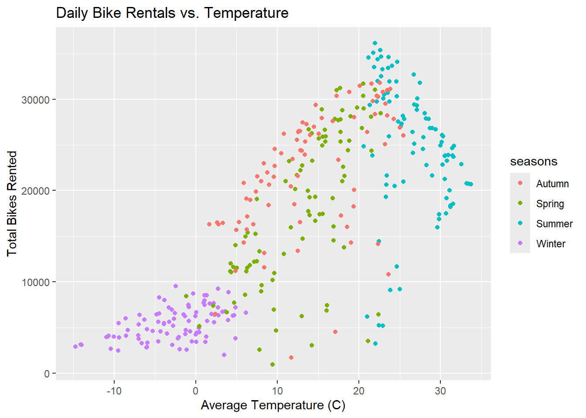
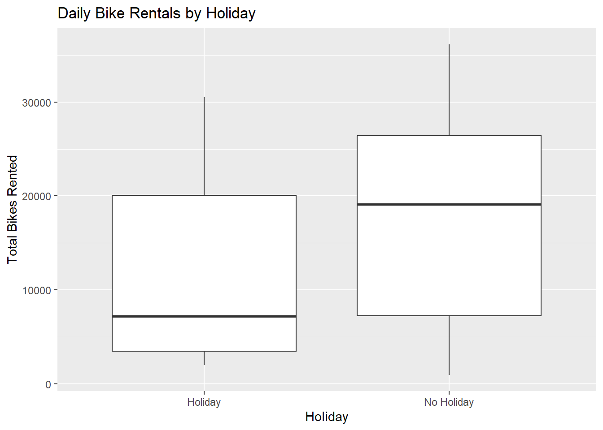
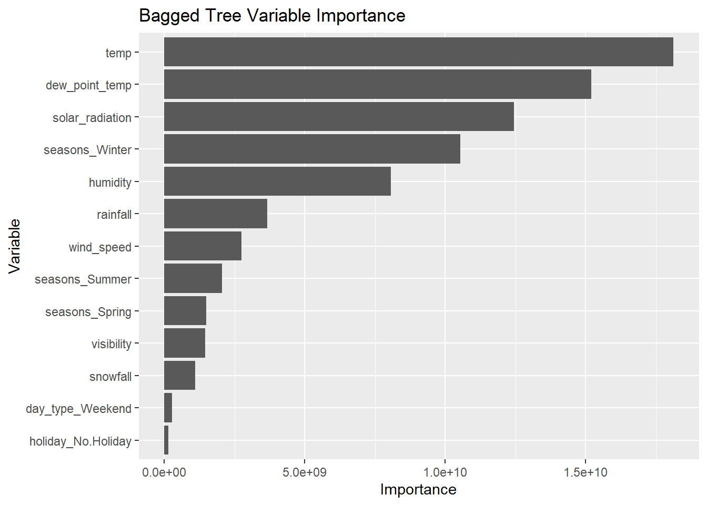
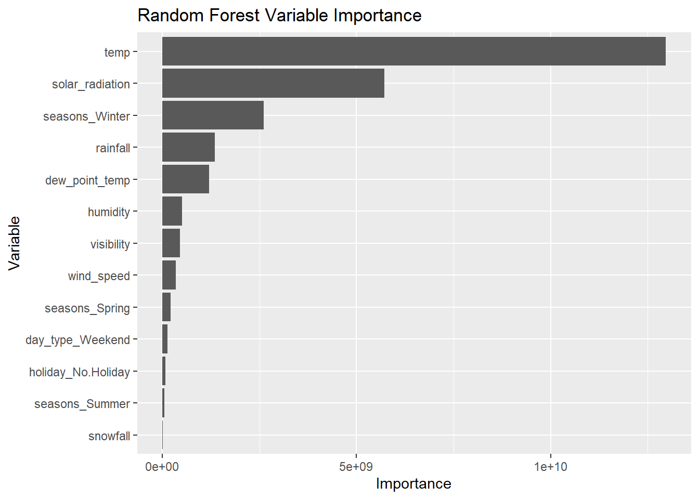

In this homework, we predict how many bikes get rented in Seoul on a given day using the weather and the type of day. Building on Homework 9, we use the same data and EDA, then redo the three MLR models in the tidymodels framework and choose the best one with 10-fold cross-validation. We also fit a tuned regression tree, bagged tree, and random forest, compare all the models on the test set using RMSE and MAE, and fit the best model to the entire data set.
First we checked each column for missing values. There are no missing values in the data set
bike_data |>is.na() |>colSums()
Date Rented Bike Count Hour
0 0 0
Temperature(°C) Humidity(%) Wind speed (m/s)
0 0 0
Visibility (10m) Dew point temperature(°C) Solar Radiation (MJ/m2)
0 0 0
Rainfall(mm) Snowfall (cm) Seasons
0 0 0
Holiday Functioning Day
0 0
Step 2: check column types and values
Next we looked at the column types and the values in each column. The numeric columns have reasonable ranges like rainfall and snowfall are never negative. The Date column is stored as character instead of a date, and Seasons, Holiday, and Functioning Day are character variables, so we fix these next.
Rented Bike Count Hour Temperature(°C) Humidity(%)
Min. : 0.0 Min. : 0.00 Min. :-17.80 Min. : 0.00
1st Qu.: 191.0 1st Qu.: 5.75 1st Qu.: 3.50 1st Qu.:42.00
Median : 504.5 Median :11.50 Median : 13.70 Median :57.00
Mean : 704.6 Mean :11.50 Mean : 12.88 Mean :58.23
3rd Qu.:1065.2 3rd Qu.:17.25 3rd Qu.: 22.50 3rd Qu.:74.00
Max. :3556.0 Max. :23.00 Max. : 39.40 Max. :98.00
Wind speed (m/s) Visibility (10m) Dew point temperature(°C)
Min. :0.000 Min. : 27 Min. :-30.600
1st Qu.:0.900 1st Qu.: 940 1st Qu.: -4.700
Median :1.500 Median :1698 Median : 5.100
Mean :1.725 Mean :1437 Mean : 4.074
3rd Qu.:2.300 3rd Qu.:2000 3rd Qu.: 14.800
Max. :7.400 Max. :2000 Max. : 27.200
Solar Radiation (MJ/m2) Rainfall(mm) Snowfall (cm)
Min. :0.0000 Min. : 0.0000 Min. :0.00000
1st Qu.:0.0000 1st Qu.: 0.0000 1st Qu.:0.00000
Median :0.0100 Median : 0.0000 Median :0.00000
Mean :0.5691 Mean : 0.1487 Mean :0.07507
3rd Qu.:0.9300 3rd Qu.: 0.0000 3rd Qu.:0.00000
Max. :3.5200 Max. :35.0000 Max. :8.80000
unique(bike_data$Seasons)
[1] "Winter" "Spring" "Summer" "Autumn"
unique(bike_data$Holiday)
[1] "No Holiday" "Holiday"
unique(bike_data$`Functioning Day`)
[1] "Yes" "No"
Steps 3-5: rename, fix the date, make factors
We then renamed the columns so they are easier to type, since the original names have spaces and symbols. Then we converted the date column to an actual date with dmy(), since the dates are in day/month/year format, and turned seasons, holiday, and functioning_day into factors
Step 6: summary stats, overall and by each categorical variable
Here we look at summary statistics for the bike count overall and across each categorical variable. Summer has the highest average hourly rentals and Winter has the lowest. When functioning_day is “No,” the bike count is always 0, because the system was not operating during those hours. Since these rows would make it look like there was zero demand, we removed them and kept only the functioning hours.
To simplify the analysis, we collapsed the hourly data so each day has one row. We summed bike count, rainfall, and snowfall since those are daily totals, and took the mean of the other weather variables. This leaves 353 days.
ggplot(bike_data, aes(x = temp, y = bike_count, color = seasons)) +geom_point() +labs(title ="Daily Bike Rentals vs. Temperature",x ="Average Temperature (C)", y ="Total Bikes Rented")

ggplot(bike_data, aes(x = seasons, y = bike_count)) +geom_boxplot() +labs(title ="Daily Bike Rentals by Season",x ="Season", y ="Total Bikes Rented")
ggplot(bike_data, aes(x = holiday, y = bike_count)) +geom_boxplot() +labs(title ="Daily Bike Rentals by Holiday",x ="Holiday", y ="Total Bikes Rented")

Split The Data
We split the data into a training set (75%) and test set (25%), stratifying on seasons so each season is represented in about the same proportion in both sets. We set a seed so the split is the same each time the document is rendered.
On the training set, we also create 10-fold cross-validation folds. Each model is fit 10 times, each time leaving out one fold and predicting on it, and the 10 errors are averaged. This lets us compare models without using the test set.
Fitting MLR Models
Before fitting the MLR models, we create a recipe to prepare the data. The recipe sets bike count as the response, and all other columns are used as predictors. We give the date the role of “ID” so it stays in the data but is not used as a predictor. Instead, we use it to create a temporary column, date_dow, which holds the day of the week. Using step_mutate, we use date_dow to create a weekday/weekend variable, then remove date_dow since we no longer need it. Next, we standardize all numeric predictors since their scales are very different. Finally, step_dummy converts seasons, holiday, and day type into 0/1 dummy variables so they can be used in the regression model.
Baking the recipe on the training data shows the result: 263 rows, standardized numeric predictors, and dummy columns such as seasons_Spring, seasons_Summer, and seasons_Winter (Autumn is the baseline)
# A tibble: 6 × 7
.metric .estimator mean n std_err .config model
<chr> <chr> <dbl> <int> <dbl> <chr> <chr>
1 mae standard 3256. 10 168. pre0_mod0_post0 MLR 1
2 rmse standard 4095. 10 204. pre0_mod0_post0 MLR 1
3 mae standard 2328. 10 163. pre0_mod0_post0 MLR 2
4 rmse standard 3080. 10 291. pre0_mod0_post0 MLR 2
5 mae standard 2287. 10 160. pre0_mod0_post0 MLR 3
6 rmse standard 3039. 10 292. pre0_mod0_post0 MLR 3
MLR 3 had the lowest CV RMSE (about 3,039) and MAE (about 2,287), so we choose it as our best MLR model. MLR 2 was very close, and the difference between them is small compared to the standard errors
# A tibble: 2 × 4
.metric .estimator .estimate .config
<chr> <chr> <dbl> <chr>
1 rmse standard 3059. pre0_mod0_post0
2 mae standard 2132. pre0_mod0_post0
We fit MLR 3 on the full training set and evaluated it on the test set using last_fit(). The test RMSE is about 3,059 and the test MAE is about 2,132. This matches the test RMSE of Model 3 from Homework 9, since we used the same split and the same model.
# A tibble: 2 × 4
.metric .estimator .estimate .config
<chr> <chr> <dbl> <chr>
1 rmse standard 3491. pre0_mod0_post0
2 mae standard 2496. pre0_mod0_post0
We tuned the tree’s depth and cost complexity over a grid of 25 combinations using 10-fold CV. The best tree had a CV RMSE of about 4,065, which is higher than all three MLR models. Several combinations tied because, past a certain depth, the tree stops splitting regardless of the setting.
The best tree was fit on the full training set and evaluated on the test set, giving an RMSE of about 3,491 and MAE of about 2,496, both worse than MLR 3.
# A tibble: 2 × 4
.metric .estimator .estimate .config
<chr> <chr> <dbl> <chr>
1 rmse standard 2615. pre0_mod0_post0
2 mae standard 2051. pre0_mod0_post0
We tuned the cost complexity of a bagged tree model (10 trees per fit) using 10-fold CV. The best bagged tree had a CV RMSE of about 3,076, a large improvement over the single tree. On the test set it had an RMSE of about 2,615 and MAE of about 2,051, the best so far.
# A tibble: 2 × 4
.metric .estimator .estimate .config
<chr> <chr> <dbl> <chr>
1 rmse standard 2287. pre0_mod0_post0
2 mae standard 1866. pre0_mod0_post0
We tuned mtry, the number of predictors each split can choose from, over values 1 to 13. The best random forest used mtry = 10 with a CV RMSE of about 3,054. On the test set it had an RMSE of about 2,287 and MAE of about 1,866, the best of all the models.
bag_final |>extract_fit_engine() |>pluck("imp") |>ggplot(aes(x = value, y =reorder(term, value))) +geom_col() +labs(title ="Bagged Tree Variable Importance",x ="Importance", y ="Variable")

Random Forest
rf_imp <- rf_final |>extract_fit_engine() |>pluck("variable.importance")tibble(term =names(rf_imp), value = rf_imp) |>ggplot(aes(x = value, y =reorder(term, value))) +geom_col() +labs(title ="Random Forest Variable Importance",x ="Importance", y ="Variable")

In both the bagged tree and random forest, temperature is the most important predictor by a wide margin. The bagged tree ranks dew point temperature second, likely because it is highly correlated with temperature, while the random forest ranks solar radiation and winter higher. Holiday and weekday/weekend have very little importance in either model.
Final Model
Since the random forest had the lowest test RMSE and MAE, we fit it to the entire data set (all 353 days) using mtry = 10. Its out-of-bag error corresponds to an RMSE of about 2,754, and it explains about 92% of the variation in daily bike rentals.
In this homework, we redid the Homework 9 MLR models in the tidymodels framework and compared them to tree-based models. Using 10-fold CV, MLR 3 with interactions and squared terms was the best MLR model, and its test RMSE matched our Homework 9 result. Among all models, the random forest performed best on the test set (RMSE about 2,287, MAE about 1,866), followed by the bagged tree, MLR 3, and the single regression tree. Averaging many trees made a big improvement over a single tree. Across models, temperature was consistently the most important predictor of daily bike rentals.